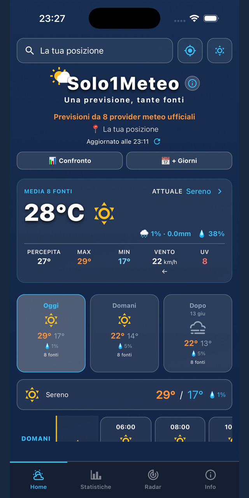
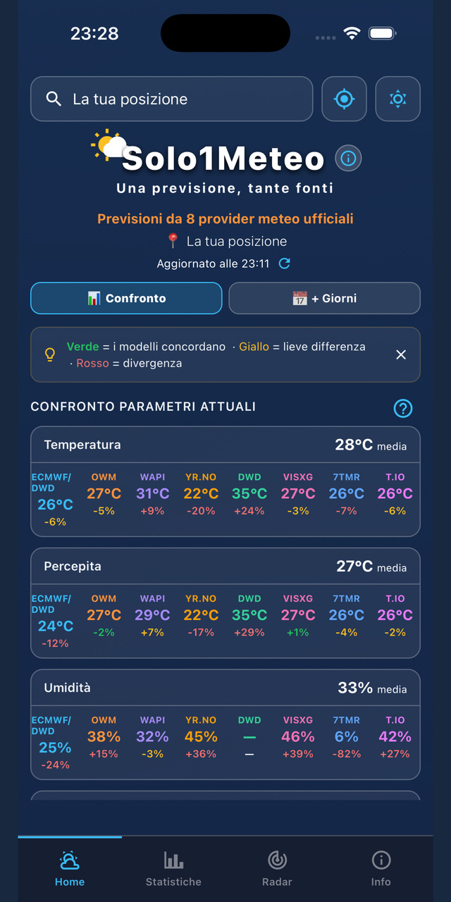
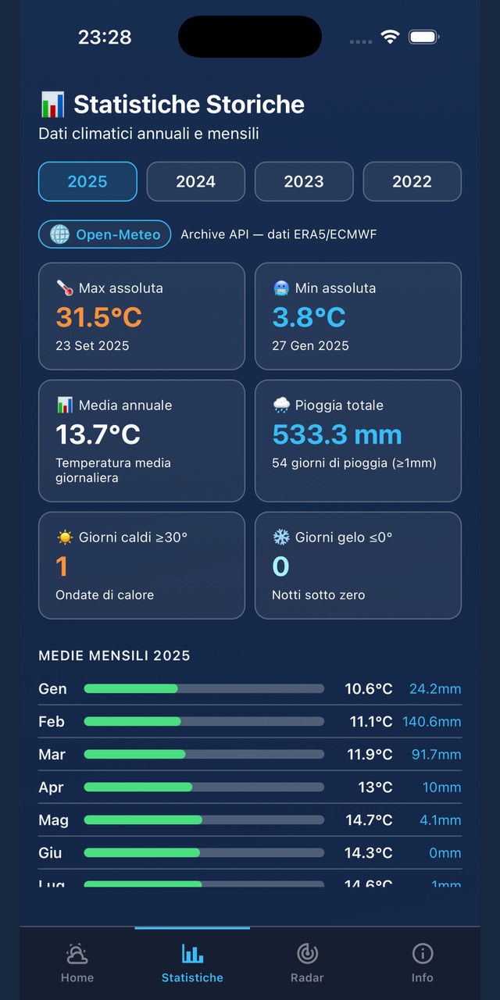
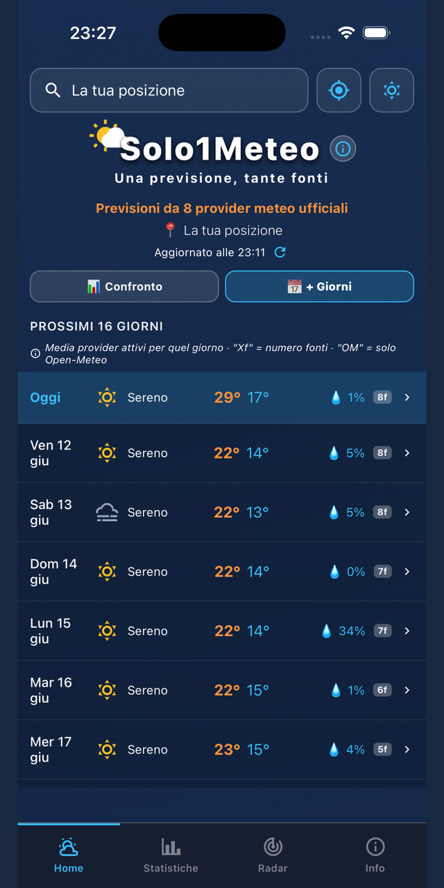

Niente più app meteo che si contraddicono. Solo1Meteo mette insieme fino a 8 fonti meteo ufficiali e ti mostra il valore medio, con accanto il numero di fonti su cui si basa.
⚠️ Solo1Meteo è un'app indipendente sviluppata da un singolo sviluppatore. Non è affiliata con, non rappresenta e non è approvata da alcun servizio meteorologico nazionale o governativo, inclusi MET Norway (Yr.no) e DWD — Deutscher Wetterdienst (Bright Sky), i cui dati open-data sono tra le fonti comparate dall'app. L'app si limita a recuperare e mostrare dati pubblici tramite API ufficiali, calcolandone la media matematica. Tutti i marchi citati appartengono ai rispettivi proprietari.
Apri tre app meteo e ottieni tre previsioni diverse per lo stesso giorno. Quale credere? Solo1Meteo risolve il problema alla radice: invece di affidarsi a un'unica fonte, calcola la media tra i provider disponibili per quel giorno e quell'ora — e te lo dice sempre, in modo trasparente.
L'app interroga in parallelo 8 servizi meteo indipendenti e calcola, per ogni valore (temperatura, pioggia, vento), la media tra le fonti che hanno dati per quel giorno/ora:
Accanto a ogni valore c'è un contatore che indica su quante fonti si basa quella previsione. Se un provider non ha dati per quel giorno o quell'ora, viene escluso automaticamente dal calcolo: niente medie "diluite" da dati mancanti.
Le previsioni arrivano da modelli meteorologici diversi (ECMWF, DWD, NOAA e altri), interrogati in tempo reale.
Oltre alla media, vedi quanto le fonti si discostano tra loro: verde = accordo, giallo = lieve differenza, rosso = divergenza.
Ogni card si apre in un dettaglio con previsioni orarie e giornaliere fino a 16 giorni, provider per provider.
Quando le fonti concordano, lo scostamento è basso. Quando divergono, c'è incertezza reale nei dati di partenza: nessuna fonte è "giusta" in anticipo.
Home, confronto tra provider, statistiche e radar — tutto in un'unica app, gratuita.




Solo1Meteo non raccoglie dati personali, non usa tracciamento né pubblicità. La posizione viene usata solo per mostrare le previsioni, in tempo reale, senza essere mai salvata.
Leggi l'informativa privacy completa →